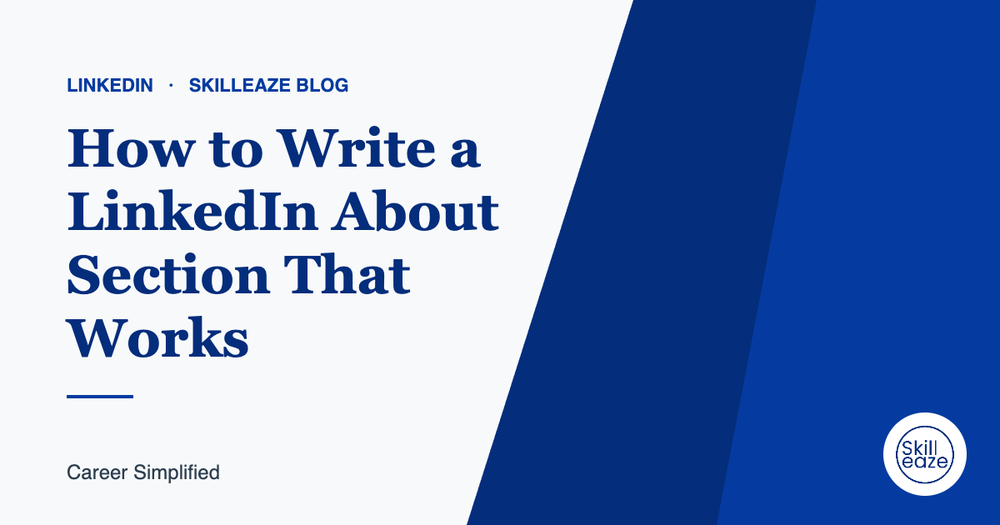

How to Write a LinkedIn About Section That Works
A simple structure for an About section that tells your story and helps recruiters find you.

Open with who you help and how
Your first two lines show before 'see more'. Make them count: your role, your focus and the value you bring.
Add proof
Mention two or three achievements with scope or results. Real examples beat adjectives.
Our team writes your LinkedIn optimization from your real experience. INR 690 · AED 30 · USD 10 (50% off).
Include your key skills naturally
Write the skills recruiters search for into your sentences instead of a keyword list.
Say what you want next
If you are open to new roles, say which kind and where.
Finish with a way to reach you
Add your email or invite people to message you. Keep the tone professional and human.
Frequently asked questions
How long should a LinkedIn About section be?
Aim for three to five short paragraphs, roughly 150 to 300 words. The first two lines are visible before the see more link, so make them count by saying who you help, what you do and what makes your work valuable.
Should I write in first or third person?
First person reads more naturally on LinkedIn and feels more personal. Third person can sound distant, as if someone else wrote it. Keep the tone professional and specific rather than casual or full of buzzwords.
Can I copy my CV summary into my About section?
You can start from it, but expand it. The About section has more room for context, the kind of problems you enjoy solving, key results and what you are looking for next. Make sure the facts match your CV exactly.
General guidance only. Employer requirements vary; always follow the job advert.
 Chat on WhatsApp
Chat on WhatsApp